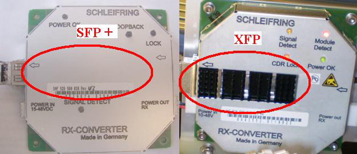
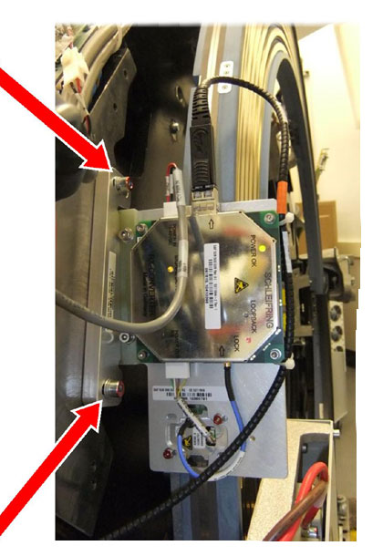
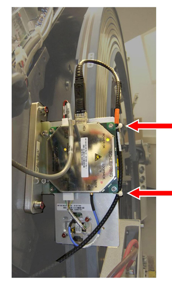
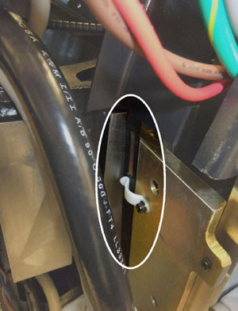
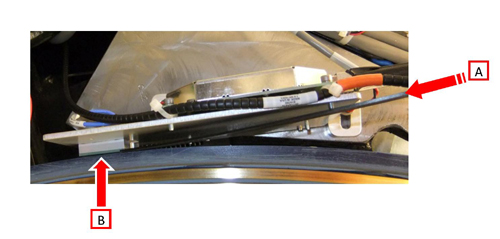
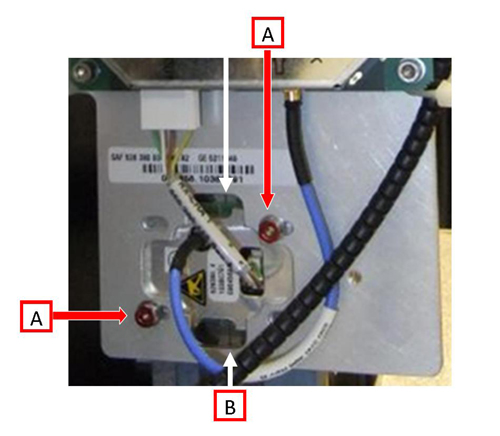
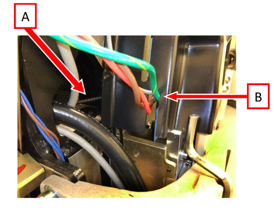

Operating Documentation
Direction 5193574-800, Rev# 22
LightSpeed 7.X Service Methods
Module Version 3.0, Version Date 7/7/11
Operating Documentation |
| Required Persons | Preliminary Reqs | Procedure | Finalization |
|---|---|---|---|
| 1 | Not Applicable | 60 mins | 60 mins |
There are two versions of the Slipring Receiver Assemblies and they are not interchangeable. Only visual inspection will tell you which type you have on the system. The SFP+ has built in loopback functionality which the XFP does not. Physical identification is shown in Illustration 1. The XFP has a large external heat sink, the SFP + has no external heat sink. There is a change-up kit which will replace both transmitter and receiver assemblies that will need to be used once XFP parts are no longer available. See illustration below to identify which style part you have.
Illustration 1: XFP and SFP+ Identification

| Item | Qty | Effectivity | Part# | Manufacturer | |
|---|---|---|---|---|---|
| FE torque wrench set | 1 | - | 5133203 or equivalent | - | |
| Standard FE toolkit | AR | - | - | - | |
| 2.5 and 5 mm Hex wrenches and driver bits | 1 | - | - | - | |
| Lockout/Tagout Kit | 1 | - | - | - | |
| Cover Dollies | 1 pr | - | - | - | |
| Item | Qty | Effectivity | Part# | Manufacturer | |
|---|---|---|---|---|---|
| XFP Slipring Receiver-Antenna Assembly (See Overview notes) | 1 | - | 5311645 | - | |
| SFP+ Slipring Receiver-Antenna Assembly (See Overview notes) | 1 | - | 5311645-2 | - | |
| XFP to SFP+ Upgrade Kit | 1 | - | 5343191 | - | |
| ||||
| Electrocution hazard | ||||
| High Voltage present. | ||||
| Use proper lockout/tagout procedures before replacing components. See safety menu of Service Document gui for appropriate procedures. |
| ||||
| Follow ALL required safety and PPE procedures customary for your organization, when working on this product. | ||||
| Condition | Reference | Effectivity |
|---|---|---|
Only trained service personnel should service the GE CT Scanner. | - | - |
| ||||
| Potential for shock. | ||||
| Voltage may be present. Potential for injury if covers removed and power is left ON. | ||||
| Always remove the right side cover first, and turn OFF power at the service switches. |
Remove the gantry right side cover.
Turn off the 3 service switches (Axial Drive, HVDC, and 120VAC) on the service switch panel.
Perform all required LOTO activities to remove power from the gantry.
Remove the left, side, and top covers, as well as the scan window and rear cover.
Refer to Replacement → Gantry → Enclosure → (Cover Removal Procedures).
| ||||
| Be careful to not contaminate the slip ring or signal tracks. | ||||
Remove the top slipring cover to gain access to the Receiver-Antenna Assembly (for the remainder of this procedure it will be referred to as Assembly).
Disconnect the fiber optic and power supply cables.
Using a 5 mm hex wrench, remove the old Assembly by removing the 2 mounting/adjustment screws; which hold the Assembly plate to the stationary frame .
Illustration 2: Mounting Screw Locations

Install the new Assembly using the 2 mounting/adjustment screws (using 5 mm hex wrench).
Reconnect the fiber optic and power supply cables to the Assembly.
Refer to Illustration 3 for cable tie locations. Secure the fiber optic cable to the Assembly mounting post using two cable ties. Place one cable tie at the end of the orange tape. There should be approximately 10 in. of fiber optic cable between the connector and the cable tie near the orange tape.
Illustration 3: Cable Tie Locations

The Gap Tool is a long black plastic strip stored next to the brush block mount and the stationary frame, below the Assembly.
Illustration 4: Gap Tool Location

Place the plastic Gap Tool [A] between the Assembly’s shoe and the slipring’s antenna [B]. See side view of assembly in Illustration 5.
Illustration 5: Gap Tool Use

Using the two mounting/adjustment screws, adjust the Assembly shoe such that the Gap Tool is lightly held (not tight) between the shoe and the slip ring antenna. The Gap Tool should move without using force.
Torque the mounting/adjustment screws to the settings in Table 1.
Table 1: Torque Settings
| 7.9 N-m | 5.8 Lb-ft | 70 In-ft | 80 Kg-cm |
To align the Assembly shoe, loosen the shoe alignment screws [A], using 2.5 mm hex wrench, and adjust the RF Receiver shoe until the gold pins line up with the centerline [B] of the RF antenna on the slipring on each side of the shoe. Refer to Illustration 6.
Illustration 6: Receiver Shoe Alignment

Torque the alignment screws to the settings below.
Table 2: Alignment Screw Torque
| 0.8 N-m | NA Lb-ft | 7 In-ft | 8 Kg-cm |
Install the slipring cover, ensuring the fiber optic cable [A] is routed behind the cover and not passing through the notch [B] at the end of the cover.
| NOTE: | Forcing the fiber optic cable through the cover notch will damage the cable. Only the power cables should be passing through the cover notch. |
Illustration 7: Routing the fiber optic cable

If you are replacing both the Slipring Transmitter and the Receiver-Antenna Assembly through the use of the XFP to SFP+ upgrade kit, use the Slipring Transmitter Replacement instructions before powering on the gantry. When done with both replacements continue with the rest of the steps in this procedure.
Remove LOTO and turn on power. Turn on the 120VAC service switch and slowly rotate the slipring watching the gap between the shoe and the slipring.
All 4 LED's on the Receiver-Antenna Assembly will be lit for normal operation.
| NOTE: | The Assembly shoe must never touch the slipring antenna. If the slipring appears to have a high spot that comes close, use the Slipring Replacement Procedure for radial run out to check and adjust the slipring. |
Ensure that the gantry is ready for rotation.
Turn on the 120VAC, HVDC and Axial drive service switches and enable Table drives.
Perform a System Scanning Test from the Functional Checks menu of the service manual to ensure proper data transmission.
Check the RTS Dip stats for the scan just run and make sure there are no errors shown.
Turn off the Axial Drive, HVDC, and 120VAC service switches.
Install the slipring top cover, gantry rear cover, top covers and left side cover.
Refer to Replacement → Gantry → Enclosure → (Cover Removal Procedures).
Turn on the gantry 120VAC, HVDC and Axial Drive service switches.
Install the gantry right side cover.